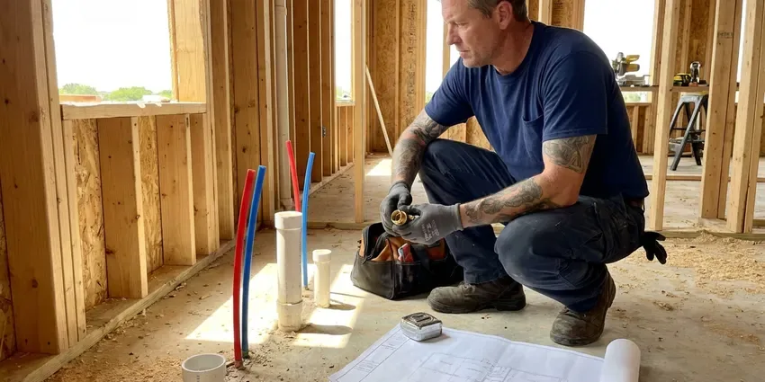
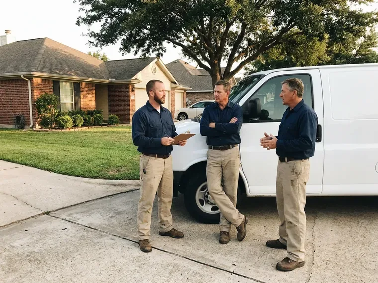

Drainage Services in Mount Pleasant, SC
For drainage service in Mount Pleasant, SC, KBN Plumbing clears clogged drains and fixes yard runoff.
- Same-Day Drain Service
- Camera Inspections Included
- Licensed Plumbers
- Guaranteed Work
Get Your Drains Moving in Mount Pleasant, SC.
We find out why water is backing up or pooling and give you a written plan.
Drains, Sewers and Yard Water in Mount Pleasant, SC
KBN Plumbing handles drainage inside and outside your home, including sink, tub and main line clogs. Outside, we install French drains, channel drains and downspout lines. Many drainage problems are really two problems, like a main line partly blocked by roots plus a downspout that dumps water right next to the cleanout, and we fix both.
Some of what we do:
- Drain cleaning and clog removal
- French drains, channel drains and pop-up emitters for yard runoff
- Sewer camera inspections with locating

Additional Plumbing Maintenance Services in Mount Pleasant, SC
Our maintenance and specialty plumbing services in Mount Pleasant, SC protect your home year-round and extend the life of every system.


Customers
Why Choose KBN Plumbing for Drainage Services in Mount Pleasant, SC?
Workmanship shows up years later. A sewer repair with proper bedding holds its grade. Pipe set on loose fill sinks into a belly, so we bed it and compact the backfill.
- Right Equipment, Cable machines, jetters, cameras and locators let us fix the cause, not the symptom.
- Licensed & Insured, Every plumber we send is licensed and insured.
- Indoor and Outdoor, We handle everything from a sink clog to a yard drain system.
Citywide Coverage
Commercial properties in Mount Pleasant get the same response times as homes. Restaurants call us for grease lines. We handle catch basins and roof drains for property managers, often after hours.
Experienced Team
Plumbers on our drain trucks work on houses and commercial kitchens alike. Commercial grease lines are slow work. A restaurant line packed with hardened grease can take an hour of jetting in stages, and our technicians know to clean the line in short passes so the loosened grease does not plug the line farther down.
Safety-First Approach
Every trench we dig starts with an 811 locate request. Digging waits until the marks are down. Private lines like irrigation, low-voltage yard lighting or a gas line to a grill are not marked by 811, so we hand-dig near any line we suspect and ask you about anything you have added to the yard.
Trusted Certified Mount Pleasant Plumbing Services Professionals
At KBN Plumbing, we take pride in licensed, certified plumbing services throughout Mount Pleasant, SC. Those papers on the wall mean something. Our plumbers hold recognized industry credentials, and they follow strict safety and quality rules on every repair, installation and maintenance call we run.
Call Us Now PHCC Plumbing Contractor Recognition
PHCC Plumbing Contractor Recognition Better Business Bureau (BBB) Accreditation
Better Business Bureau (BBB) Accreditation Angi Certified Pro
Angi Certified Pro ISO 9001 Quality Management Certification
ISO 9001 Quality Management CertificationDependable Drainage Services in Mount Pleasant, SC
Dry Well Installation in Mount Pleasant, SC
Where there is no place to discharge on the surface, a dry well lets water soak into deeper soil. It only works if the soil drains. A perc check comes first, then the well gets sized for the area it serves and set away from the foundation and septic.

Sump Pump Services in Mount Pleasant, SC
A sump pump protects a basement or crawlspace from groundwater. We test the float, check the discharge line and check valve, and replace pumps that hum, run nonstop, or cannot keep up during a hard rain. Discharge must go outside. A frozen or buried discharge line is a common reason a working pump still floods the pit.
French Drain Installation in Mount Pleasant
A French drain is a gravel-filled trench with perforated pipe that collects groundwater and carries it away. We wrap the gravel in filter fabric so silt does not clog it. It needs steady fall to an outlet, and the outlet gets a grate to keep critters out.
Kitchen, Bath and Laundry Drain Clearing in Mount Pleasant
Slow sinks, gurgling tubs and overflowing laundry standpipes usually come from grease, hair and lint. Private wells are common outside town limits, and some South Carolina well water carries iron, low pH or sediment that can stain fixtures and wear down water heaters. Scale roughens the inside of old pipe so debris catches, and the same drain keeps clogging. A lint trap on the washer hose helps a lot.
Channel and Trench Drains in Mount Pleasant, SC
Driveways and patios that slope toward the house can send runoff straight into a garage or a door threshold. A trench drain cut into the concrete stops it. We saw-cut the slab, set a polymer or concrete channel with a grate rated for the traffic it will see, and pipe it in solid PVC to a safe discharge point away from the foundation.
Hydro-Jetting Services in Mount Pleasant
A hydro jetter sends water at several thousand psi through a nozzle that scours the full pipe wall. Cables punch through clogs, but jetting removes the grease and scale coating the pipe, which is what keeps causing them. Grease lines benefit most. We camera the line first to make sure the pipe is sound enough to jet.
Jetting for Scale and Grease in Mount Pleasant
Jetting uses water at high pressure to strip a pipe back to its original diameter. Private wells are common outside town limits, and some South Carolina well water carries iron, low pH or sediment that can stain fixtures and wear down water heaters. Mineral scale and grease build up on pipe walls over years and catch everything that goes down the drain, so a cleaned pipe stays clear much longer than one that was only cabled. Plan on about two hours.

Storm Drain and French Drain Installation in Mount Pleasant, SC
Heavy downpours expose every low spot in a yard. Coastal areas deal with storm surge and a high water table, while inland areas see flash flooding from slow-moving summer thunderstorms. We install catch basins at the low points and run solid PVC to a legal outlet, sized so the pipe carries the water from a hard storm rather than backing up into the basin. Every system needs a place to discharge.
Drainage Services Near Me in Mount Pleasant, SC
Searching for drainage services near me in Mount Pleasant, SC tends to happen when water is already somewhere it should not be. We keep trucks nearby. Same-day main line clearing is normal, and we can come back after rain to watch the yard drain.
Water backing up a drain or flooding a yard needs a crew that is already in town. Our trucks are close. For storm flooding, we can pump out window wells or low spots, clear blocked catch basins, and then come back to plan a permanent drain once the ground dries enough to dig.
KBN Plumbing at a Glance
- Licensed and insured plumbers serving Mount Pleasant, SC
- Same-day appointments and 24/7 emergency response
- Clear written estimates, no hidden fees
- 4.8-star rated by 596+ South Carolina customers
Mount Pleasant Map
Mount Pleasant Information
- Population
- 95,232
- Area codes
- 843/443/803
- Service area
- Mount Pleasant and towns within a 40 mile drive
- Nearby
- Charleston, North Charleston, Goose Creek, Summerville
Homes in Mount Pleasant, SC need drains that keep up indoors and out. We clear lines and move runoff away from the foundation.
Talk to a Plumber
Call KBN Plumbing for honest, reliable plumbing from people who know the trade in Mount Pleasant, SC.
Our Specialized Plumbing Services in Mount Pleasant, SC
At KBN Plumbing, you get every kind of plumbing service from one company across Mount Pleasant, SC. From leak detection to full system installs, our team works fast and charges fair prices on homes and commercial properties alike. Here are the core services we offer:


How We Fix Drainage Problems in Mount Pleasant, SC
We keep drainage work tidy and quick, with a clear price up front.
Request a Quote
Call (864) 588-3813 and tell us if it is an indoor drain or outdoor water. We schedule a visit.
Inspect and Plan
We clear and camera indoor lines or walk your property to check slope and roof runoff.
Clear or Install
Our crew clears the line or installs the new drainage. We test it with running water.
Frequently Asked Questions About Drainage Services in Mount Pleasant
Most basic drain clearing in Mount Pleasant, SC runs $150 to $500. Main lines cost more than sinks. Hydro jetting runs higher than cabling because of the equipment and time, and sewer line repair can range from about $1,500 for a spot repair to well over $8,000 for a full replacement with digging.
Our cable machines come from Spartan Tool and RIDGID, and our cameras are RIDGID SeeSnake units with built-in locators. Jetters are trailer or cart units. A locating camera pinpoints the problem, so a repair means one small hole, not a long trench.
Watch for water pooling near the house after storms. Washed-out mulch tells you too. Inside, a damp crawlspace, a musty basement or efflorescence on the foundation wall all mean water is reaching the house instead of being carried away, and the problem usually starts at a downspout or a low spot.
Installations like French drains, dry wells and sewer repairs carry a workmanship warranty. Drain clearing has a separate guarantee. The terms are written on your invoice, and if a yard drain we installed does not move water the way we said it would, we come back and correct it at no charge for labor.
Drain clearing carries a service guarantee for a set period. If the line clogs again in that window, we come back. The guarantee assumes the line is sound, so if the camera shows roots through a broken joint or a collapsed section, we tell you before we leave that clearing is a temporary fix.
Clearing a clog does not need a permit. Pipe repairs often require one. Replacing a section of sewer, adding a cleanout, or connecting a new drain to the sewer generally requires a permit and an inspection, and we handle that paperwork and schedule the inspector as part of the job.
They solve different problems. French drains handle water moving through soil. Channel drains catch surface water on concrete, and plenty of yards need both.
Most homes never need scheduled drain cleaning. Clean them when they slow down. Homes with root-prone sewers, old cast iron, or a kitchen that sends a lot of grease down the drain do better with a cleaning every 12 to 24 months, timed before the line slows to a crawl.
What Our Customers Say About Our Plumbing Experts

Megan L.
Our upstairs tub drained so slowly that every shower turned into a bath. KBN Plumbing pulled a wad of hair out of the stopper and then snaked the line past the trap. Three months later it still drains fast.
Drain Cleaning · Hilton Head Island, SC
Monica A.
Our water bill nearly doubled in one month with no change in how we used water. The tech checked the meter, heard the leak under the hallway with his equipment, and opened a hole about a foot square. Fixed the same day.
Slab Leak Repair · Summerville, SCLaura S.
Our 40 gallon tank started leaking from the bottom after thirteen years. The tech hauled the old one out, set a new unit with a fresh expansion tank, and had hot water running in about four hours. He took the old tank with him too.
Water Heater Replacement · Mount Pleasant, SC
Robert G.
The camera showed a full break in our clay sewer line near the street. KBN Plumbing replaced it with a trenchless pipe burst, so the only digging was two small pits in the yard. They let us watch the footage before and after.
Sewer Line Replacement · Hilton Head Island, SC
Greg S.
I manage a small strip center with six tenants. KBN Plumbing handles our annual backflow testing and fixed a recurring clog in the shared sewer line that had been backing into the nail salon. Their reports come in clean and on time.
Commercial Plumbing · Goose Creek, SCKevin O.
Before buying our house I paid for a sewer camera inspection. KBN Plumbing found a belly in the line that held standing water about forty feet from the cleanout. We used the video to get the sellers to fix it before closing.
Sewer Camera Inspection · Mount Pleasant, SC